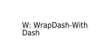
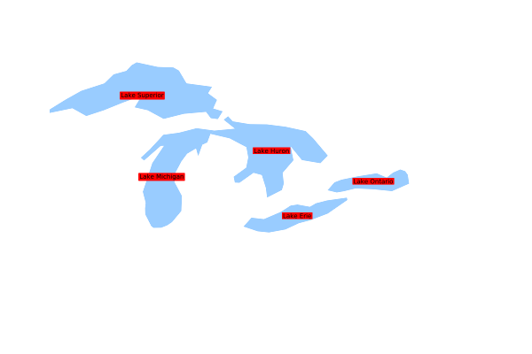

LABEL¶
- ALIGN [left|center|right|attribute]
Added in version 5.4.
Specifies text alignment for multiline labels (see WRAP) Note that the alignment algorithm is far from precise, so don’t expect fabulous results (especially for right alignment) if you’re not using a fixed width font.
[attribute] was added in version 7.6. If an attribute is used, it is expected to be:
of type string and should be one of the following: left, center, right.
of type integer and should be [1,2,3] which means:
1 = “left”
2 = “center”
3 = “right”
if the [attribute] is of type integer as described above, the label generation will be much faster, since string comparison is avoided.
- ANGLE [double|auto|auto2|follow|attribute]
Angle, counterclockwise, given in degrees, to draw the label. Default is 0, and must be in the range -360 to 360.
AUTO allows MapServer to compute the angle. Valid for LINE layers only.
AUTO2 same as AUTO, except no logic is applied to try to keep the text from being rendered in reading orientation (i.e. the text may be rendered upside down). Useful when adding text arrows indicating the line direction.
FOLLOW was introduced in version 4.10 and tells MapServer to compute a curved label for appropriate linear features (see MS RFC 11: Support for Curved Labels for specifics). See also MAXOVERLAPANGLE.
[Attribute] was introduced in version 5.0, to specify the item name in the attribute table to use for angle values. The hard brackets [] are required. For example, if your shapefile’s DBF has a field named “MYANGLE” that holds angle values for each record, your LABEL object might contain:
LABEL COLOR 150 150 150 OUTLINECOLOR 255 255 255 FONT "sans" TYPE truetype SIZE 6 ANGLE [MYANGLE] POSITION AUTO PARTIALS FALSE END
The associated RFC document for this feature is MS RFC 19: Style & Label attribute binding.
ANTIALIAS [true|false]
Removed in version 7.0: GD support was removed in 7.0
Should text be antialiased? Note that this requires more available colors, decreases drawing performance, and results in slightly larger output images. Only useful for GD (gif) rendering. Default is false. Has no effect for the other renderers (where anti-aliasing can not be turned off).
- BACKGROUNDCOLOR [r] [g] [b] | [hexadecimal string]
Removed in version 6.0: Use a LABEL STYLE object with`GEOMTRANSFORM labelpoly` and COLOR instead.
Color to draw a background rectangle (i.e. billboard). Off by default.
- BACKGROUNDSHADOWCOLOR [r] [g] [b] | [hexadecimal string]
Removed in version 6.0: Use a LABEL STYLE object with GEOMTRANSFORM labelpoly, COLOR and OFFSET instead.
Color to draw a background rectangle (i.e. billboard) shadow. Off by default.
- BACKGROUNDSHADOWSIZE [x][y]
Removed in version 6.0: Use a LABEL STYLE object with GEOMTRANSFORM labelpoly, COLOR and OFFSET instead.
How far should the background rectangle be offset? Default is 1.
- BUFFER [integer]
Padding, in pixels, around labels. Useful for maintaining spacing around text to enhance readability. Available only for cached labels. Default is 0.
- COLOR [r] [g] [b] | [hexadecimal string] | [attribute]
Color to draw text with.
r, g and b shall be integers [0..255]. To specify green, the following is used:
COLOR 0 255 0
hexadecimal string can be
RGB value: “#rrggbb”. To specify magenta, the following is used:
COLOR "#FF00FF"
RGBA value (adding translucence): “#rrggbbaa”. To specify a semi-translucent magenta, the following is used:
COLOR "#FF00FFCC"
[Attribute] was introduced in version 5.0, to specify the item name in the attribute table to use for color values. The hard brackets [] are required. For example, if your shapefile’s DBF has a field named “MYCOLOR” that holds color values for each record, your LABEL object might contain:
LABEL COLOR [MYCOLOR] OUTLINECOLOR 255 255 255 FONT "sans" TYPE truetype SIZE 6 POSITION AUTO PARTIALS FALSE END
The associated RFC document for this feature is MS RFC 19: Style & Label attribute binding.
- ENCODING [string]
Removed in version 7.0: UTF-8 is now the encoding used by MapServer, and dataset encodings are handled using LAYER ENCODING instead.
Supported encoding format to be used for labels. If the format is not supported, the label will not be drawn. Requires the iconv library (present on most systems). The library is always detected if present on the system, but if not, the label will not be drawn.
Required for displaying international characters in MapServer. More information can be found in the Label Encoding document.
- EXPRESSION [string]
Added in version 6.2.
Expression that determines when the LABEL is to be applied. See EXPRESSION in CLASS.
- FONT [name|attribute]
Font alias (as defined in the FONTSET) to use for labeling.
[Attribute] was introduced in version 5.6 to specify the font alias.
May contain a comma-separated list of up to MS_MAX_LABEL_FONTS (usually 5) font aliases used as fallback fonts in renderers supporting it, if a glyph is not available in a font. If specified directly, be sure to enclose the list with quotes. See MS RFC 80: Font Fallback Support.
Since version 7, MapServer supports language specific fonts. See MS RFC 98: Label/Text Rendering Overhaul.
- FORCE [true|false|group]
Forces labels for a particular class on, regardless of collisions. Available only for cached labels. Default is false. If FORCE is true and PARTIALS is false, FORCE takes precedence, and partial labels are drawn.
The GROUP parameter, added in version 6.2, determines if the label is allowed to intersect other labels from the same feature. Multiple STYLE blocks can be used to render graphic symbols instead of or alongside text. See Complex Multi Label/Symbol Symbology.
- MAXLENGTH [integer]
Added in version 5.4.
This keyword interacts with the WRAP keyword so that line breaks only occur after the defined number of characters.
Interaction with WRAP keyword¶ without maxlength
maxlength > 0
wrap = ‘char’
always wrap at the WRAP character
newline at the first WRAP character after MAXLENGTH characters
no wrap
no processing
skip label if it contains more than MAXLENGTH characters
Warning
Specifying MAXLENGTH 0 to always wrap at the wrap character will cause an error in MapServer >=8 (as there are more strict checks in MapServer >= 8 for negative or zero values), so instead, do not specify a MAXLENGTH and MapServer will then wrap at the wrap character.
Here is an example that wraps at the first dash “-” that occurs after 12 characters in the label (MAXLENGTH 12) :
LAYER NAME "wrap-with-dash-with-maxlength" CLASS LABEL TYPE truetype ANGLE follow FONT "dejavu" SIZE 8 COLOR 0 0 0 MAXLENGTH 12 #wrap at first dash after 12 characters WRAP "-" END #label ... END #class ... FEATURE POINTS 50 -50 150 -50 END #points TEXT "W: WrapDash-With-Dash" END #feature END #layer
so the label will appear in the map image as:

The associated RFC document for this feature is MS RFC 40: Support Label Text Transformations.
Support for negative MAXLENGTH that implied forced linebreaks is not supported since version 7, a workaround implies pre-processing such labels to include linebreaks or wrap characters. Must be greater than 0.
- MAXOVERLAPANGLE [double]
Angle threshold to use in filtering out ANGLE FOLLOW labels in which characters overlap (floating point value in degrees). This filtering will be enabled by default starting with MapServer 6.0. The default MAXOVERLAPANGLE value will be 22.5 degrees, which also matches the default in GeoServer. Users will be free to tune the value up or down depending on the type of data they are dealing with and their tolerance to bad overlap in labels. As per RFC 60, if MAXOVERLAPANGLE is set to 0, then we fall back on pre-6.0 behavior which was to use maxoverlapangle = 0.4*MS_PI (40% of 180 degrees = 72degree). Must be between 0 to 360.
The associated RFC document for this feature is MS RFC 60: Labeling enhancement: ability to skip ANGLE FOLLOW labels with too much character overlap.
- MAXSCALEDENOM [double]
Added in version 5.4.
Minimum scale at which this LABEL is drawn. Scale is given as the denominator of the actual scale fraction, for example for a map at a scale of 1:24,000 use 24000. Must be greater or equal to 0.
See also
- MAXSIZE [double]
Maximum font size to use when scaling text (pixels). Default is 256. Starting from version 5.4, the value can also be a fractional value (and not only an integer). Must be greater than 0. See LAYER SYMBOLSCALEDENOM.
- MINDISTANCE [integer]
Minimum distance between duplicate labels. Given in pixels. Starting from version 7.2, the distance is calculated from the label boundary. Prior versions used the label center. Must be greater than 0.
- MINFEATURESIZE [integer|auto]
Minimum size a feature must be to be labeled. Given in pixels. For line data the overall length of the displayed line is used, for polygons features the smallest dimension of the bounding box is used. “Auto” keyword tells MapServer to only label features that are larger than their corresponding label. Available for cached labels only. Must be greater than 0.
- MINSCALEDENOM [double]
Added in version 5.4.
Maximum scale at which this LABEL is drawn. Scale is given as the denominator of the actual scale fraction, for example for a map at a scale of 1:24,000 use 24000. Must be greater or equal to 0.
See also
- MINSIZE [double]
Minimum font size to use when scaling text (pixels). Default is 4. Starting from version 5.4, the value can also be a fractional value (and not only integer). Must be greater than 0. See LAYER SYMBOLSCALEDENOM.
- OFFSET [x|attribute_x][y|attribute_y]
Offset values for labels, relative to the lower left hand corner of the label and the label point. Given in pixels. In the case of rotated text specify the values as if all labels are horizontal and any rotation will be compensated for.
[attribute_x] and [attribute_y] were added in version 7.6. If an attribute is used, it must be of type integer.
When used with FOLLOW angle, two additional options are available to render the label parallel to the original feature:
OFFSET x -99 : will render the label to the left or to the right of the feature, depending on the sign of {x}.
OFFSET x 99 : will render the label above or below the feature, depending on the sign of {x}.
See LAYER SYMBOLSCALEDENOM.
- OUTLINECOLOR [r] [g] [b] | [hexadecimal string] | [attribute]
Color to draw a one pixel outline around the characters in the text.
r, g and b shall be integers [0..255]. To specify green, the following is used:
OUTLINECOLOR 0 255 0
hexadecimal string can be
RGB value: “#rrggbb”. To specify magenta, the following is used:
OUTLINECOLOR "#FF00FF"
RGBA value (adding translucence): “#rrggbbaa”. To specify a semi-translucent magenta, the following is used:
OUTLINECOLOR "#FF00FFCC"
[attribute] was introduced in version 5.0, to specify the item name in the attribute table to use for color values. The hard brackets [] are required. For example, if your shapefile’s DBF has a field named “MYOUTCOLOR” that holds color values for each record, your LABEL object might contain:
LABEL COLOR 150 150 150 OUTLINECOLOR [MYOUTCOLOR] FONT "sans" TYPE truetype SIZE 6 POSITION AUTO PARTIALS FALSE END
The associated RFC document for this feature is MS RFC 19: Style & Label attribute binding.
- OUTLINEWIDTH [integer]
Width of the outline if OUTLINECOLOR has been set. Defaults to 1. Currently only the AGG renderer supports values greater than 1, and renders these as a ‘halo’ effect: recommended values are 3 or 5. If the renderer supports it and the text size is variable, the outline will be scaled proportionally to the text and the value specified as OUTLINEWIDTH is therefore the width at the same scale at which the SIZE is specified. Must be greater than 0.
- PARTIALS [true|false]
Can text run off the edge of the map? Default is false. If FORCE is true and PARTIALS is false, FORCE takes precedence, and partial labels are drawn.
Note
The default changed from true to false, since the MapServer 7.2 release.
- POSITION [ul|uc|ur|cl|cc|cr|ll|lc|lr|auto|attribute]
Position of the label relative to the labeling point (layers only). First letter is “Y” position, second letter is “X” position. “Auto” tells MapServer to calculate a label position that will not interfere with other labels. With points, MapServer selects from the 8 outer positions (i.e. excluding cc). With polygons, MapServer selects from cc (added in MapServer 5.4), uc, lc, cl and cr as possible positions. With lines, it only uses lc or uc, until it finds a position that doesn’t collide with labels that have already been drawn. If all positions cause a conflict, then the label is not drawn (Unless the label’s FORCE a parameter is set to “true”). “Auto” placement is only available with cached labels.
When used with attribute, it must be of type string and use one of the following: ul|uc|ur|cl|cc|cr|ll|lc|lr|auto.
- PRIORITY [integer]|[item_name]|[attribute]|[expression]
Added in version 5.0.
The priority parameter takes an integer value between 1 (lowest) and 10 (highest). The default value is 1. It is also possible to bind the priority to an attribute (item_name) using square brackets around the [item_name]. e.g. “PRIORITY [someattribute]”
Labels are stored in the label cache and rendered in order of priority, with the highest priority levels rendered first. Specifying an out of range PRIORITY value inside a map file will result in a parsing error. An out of range value set via MapScript, coming from a shape attribute, or calculated by an expression will be clamped to the min/max values at rendering time. There is no expected impact on performance for using label priorities.
[attribute] was introduced in version 5.6.
[expression] was added in version 8.2.
- REPEATDISTANCE [integer]
Added in version 5.6.
The label will be repeated on every line of a multiline shape and will be repeated multiple times along a given line at an interval of REPEATDISTANCE pixels. Must be greater than 0.
The associated RFC document for this feature is MS RFC 57: Labeling enhancements: ability to repeat labels along a line/multiline.
- SHADOWCOLOR [r] [g] [b] | [hexadecimal string]
Color of drop shadow. A label with the same text will be rendered in this color before the main label is drawn, resulting in a shadow effect on the the label characters. The offset of the rendered shadow is set with SHADOWSIZE.
r, g and b shall be integers [0..255]. To specify green, the following is used:
SHADOWCOLOR 0 255 0
hexadecimal string can be
RGB value: “#rrggbb”. To specify magenta, the following is used:
SHADOWCOLOR "#FF00FF"
RGBA value (adding translucence): “#rrggbbaa”. To specify a semi-translucent magenta, the following is used:
SHADOWCOLOR "#FF00FFCC"
- SHADOWSIZE [x][y]|[attribute][attribute]|[x][attribute]|[attribute][y]
Shadow offset in pixels, see SHADOWCOLOR.
[Attribute] was introduced in version 6.0, and can be used like:
SHADOWSIZE 2 2 SHADOWSIZE [shadowsizeX] 2 SHADOWSIZE 2 [shadowsizeY] SHADOWSIZE [shadowsize] [shadowsize]
- SIZE [integer]|[tiny|small|medium|large|giant]|[attribute]|[expression]
Text size. Use a number to give the size in pixels of your TrueType font based label, or any of the other 5 listed keywords for bitmap fonts.
When scaling is in effect (SYMBOLSCALEDENOM is specified for the LAYER), SIZE gives the size of the font to be used at the map scale 1:SYMBOLSCALEDENOM.
[Attribute] was introduced in version 5.0, to specify the item name in the attribute table to use for size values. The hard brackets [] are required. For example, if your shapefile’s DBF has a field named “MYSIZE” that holds size values for each record, your LABEL object might contain:
LABEL COLOR 150 150 150 OUTLINECOLOR 255 255 255 FONT "sans" TYPE truetype SIZE [MYSIZE] POSITION AUTO PARTIALS FALSE END
The associated RFC document for this feature is MS RFC 19: Style & Label attribute binding.
[expression] was added in version 7.6 to allow arithmetic expressions returning an integer value as part of MS RFC 124: Improving SLD Support in MapServer. Attributes can be used as part of this expression:
LABEL TEXT "[name]" COLOR 255 255 255 TYPE TRUETYPE FONT vera-bold SIZE (( [s12] * [s12] ) - 132 ) END
Note
The SIZE value can only be an integer (not a fractional value), because the renderer Freetype only accepts integers. Must be greater than 0.
- STYLE
The start of a STYLE object.
Label specific mechanisms of the STYLE object are the GEOMTRANSFORM options:
- GEOMTRANSFORM [labelcenter|labelpnt|labelpoly]
Added in version 6.0.
Creates a geometry that can be used for styling the label. Does not apply to ANGLE FOLLOW labels.
labelcenter places the text in the center of the feature.
labelpnt draws a marker on the geographic position the label is attached to. This corresponds to the center of the label text only if the label is in position CC.
labelpoly generates the bounding rectangle for the text, with 1 pixel of padding added in all directions.
The resulting geometries can be styled using the mechanisms available in the STYLE object.
Example - draw a red background rectangle for the labels with a “shadow” (i.e. billboard) in gray text, centered in the polygon feature:
STYLE GEOMTRANSFORM 'labelcenter' COLOR 153 153 153 END # STYLE STYLE GEOMTRANSFORM 'labelpoly' COLOR 255 0 0 END # STYLE

- TEXT [string|expression]
Added in version 6.2.
Text to label features with (useful when multiple labels are used). Overrides values obtained from the LAYER LABELITEM and the CLASS TEXT. See TEXT in CLASS.
- TYPE [bitmap|truetype]
Type of font to use. Generally bitmap fonts are faster to draw then TrueType fonts. However, TrueType fonts are scalable and available in a variety of faces. Be sure to set the FONT parameter if you select TrueType.
Note
Bitmap fonts are only supported with the AGG and GD renderers.
- WRAP [character]
Character that represents an end-of-line condition in label text, thus resulting in a multi-line label. Interacts with MAXLENGTH for conditional line wrapping after a given number of characters.
Labels are also wrapped at Zero Width Space Unicode characters (0x200b) when WRAP is enabled. For example, allow wrapping after hyphens without removing the hyphen character at the wrap. You can insert this character in your PostGIS query with replace(field, ‘-’, E’-u200b’).
Added in version 7.2.1: Wrapping at Zero Width Space